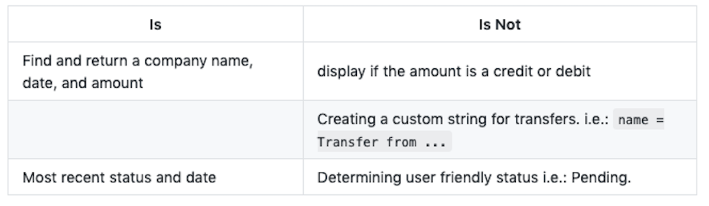
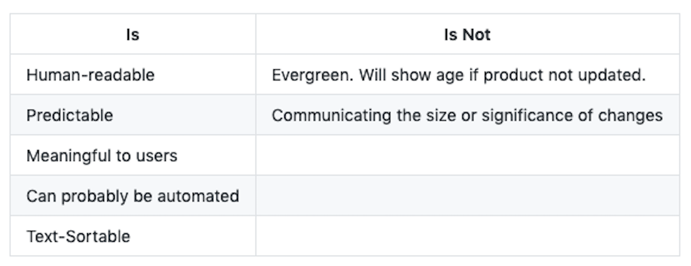
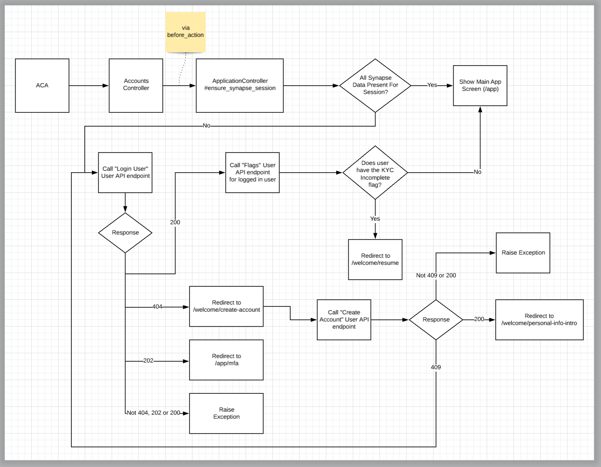
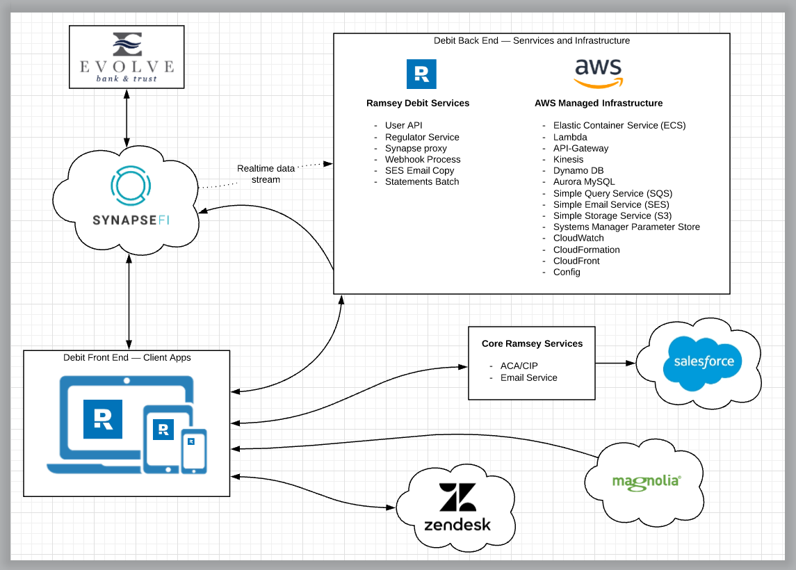
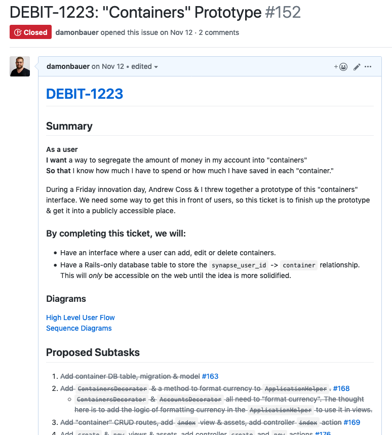

workflow
part 1: design
ruthlessly cut scope
part 1: design
* ask yourself this question: what can your team, including design & product, agree on that is the smallest piece of work?
* Once you have that, ensure these 3 things are true with that smallest piece of work.
provide
some user value
part 1: design: ruthlessly cut scope
don't box yourself in
part 1: design: ruthlessly cut scope
* a small piece of work should help build a foundation to help you iterate quickly
ship quickly & learn
part 1: design: ruthlessly cut scope
* what can you ship _fast_? How can you use your first iteration to learn?
before code
part 1: design
* Now that we have an understanding about _what_ we're trying to build, let's talk about building it.
* Pull Requests _should be_ the manifestation of all the planning your team has _already_ done & agreed to before touching code.
get feedback early
part 1: design: before code
* Use your team as a sounding board to discuss ideas, tradeoffs, work through logic
share context
part 1: design: before code
* Think of just some of the reasons why you might be out of the office or even away from your desk. Sick time, vacation, DMV, meetings (this one included)... there are plenty of times where a teammate could pick up where you left off. This is why planning the work with your team is crucial. Everyone should have a decent understanding of what we're building and a pretty solidified idea on how.
avoid costly mistakes
part 1: design: before code
* If you make one big PR that has a concept baked in that is "wrong", it's very difficult to change.
* However, in the scenarios I'm proposing, your team has agreed on how to build something and everyone has the context of what we're building. Also, you'll be making very small PRs. These 3 pieces make it trivial for a teammate to call out a "wrong" concept & it's also easy for you to fix it before it is proliferated throughout the code.
artifacts
is/is not
part 1: design: artifacts

part 1: design: artifacts: is/is not
* Intended to provide a high level overview about the scope upcoming work.
* Helps decide what to include & what to exclude by focusing attention by providing distint boundaries.

part 1: design: artifacts: is/is not
diagrams
part 1: design: artifacts

part 1: design: artifacts: diagrams

part 1: design: artifacts: diagrams
design docs
part 1: design: artifacts

part 1: design: artifacts: design docs
* Explain the "what", add documentation & list proposed subtasks.
* By reading this document, anyone on your team should be able to understand what will be worked on & how you plan to approach implementing it.
* Pieces:
* JIRA ticket link
* High level summary
* Diagrams
* Proposed Subtasks
part 2: always be shipping
deliver
something
part 2: always be shipping
* Aim to ship some part of a feature before it's polished or complete.
why
part 2: always be shipping
low commitment
part 2: always be shipping: why
feedback
part 2: always be shipping: why
avoid potentially unneeded work
part 2: always be shipping: why
metrics